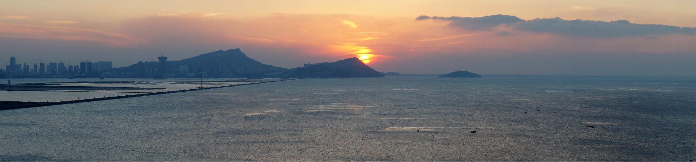

<div id="main-content">
	<div id="all">
		<div id="name">
			<span>about 连云港</span>
		</div>
		
		<div class="textdiv intro normal-size">
			<p>
				<span>简介:</span><a target="_self" href="http://baike.baidu.com/link?url=Od-S-fFOXv-IDqVOfvJ0H7YeF_giggpr5Es70bVzzhmwHxT_rtFJ1PMZ9nJWuewVx_PUj1o_Tt01UuVjhz0Neaeqhv0fk61tK49zMvkCIKKeirp-qMQutg2WCdLyayo-">百科</a>
			</p>
			<p>
				<span>交通：</span>
				<ul>
					<li>最近机场：<a id="airport" class="airport" href="javascript:void(0);">连云港白塔埠机场</a></li>
					<li>最近高铁站：<a id="crt" class="crt" href="javascript:void(0);">徐州东站</a>，之后徐州东站有直达连云港市区大巴</li>
					<li>最近火车站：<a id="trains" class="trains" href="javascript:void(0);">连云港东站</a>，连云港东站有直达连云港市区快速公交（BRT）</li>
				</ul>
			</p>
			<p>
				<span>吃喝玩乐：</span>
				<ul>
					<li>市中心：<a id="city-center" class="city-center" href="javascript:void(0);">市民广场</a></li>
					<li>推荐美食：<a target="_self" href="https://www.dianping.com/shop/22145274">海港酒店</a>，<a target="_self" href="https://www.dianping.com/shop/9367009">洪泽小鱼馆</a>，<a target="_self" href="https://www.dianping.com/shop/24892138">后街娃娃鱼电烤串</a>，<a target="_self" href="https://www.dianping.com/shop/13906840">月亮弯生煎大王</a>，<a target="_self" href="https://www.dianping.com/search/keyword/95/0_%E7%89%9B%E6%9D%AF%E6%9D%AF">牛杯杯</a>，</li>
					<li>陇海步行街、海州仿古街道：<a target="_self" href="https://www.dianping.com/mylist/1697169">点评榜单</a></li>
					<li>景点（路途较远）：<a target="_self" href="https://www.dianping.com/shop/9315266">连岛海滨浴场</a>（大沙湾+苏马湾），<a target="_self" href="https://www.dianping.com/shop/5379184">东海水晶城</a>，<a target="_self" href="https://www.dianping.com/shop/2424976">花果山</a>（悟空老家，江苏最高峰-600多米）</li>
				</ul>
			</p>
		</div>
	</div>
</div>